失憶的冒險者
我們伺服器實際的怪物設定（不是日版 wiki 的資料）。
能力值
| 項目 | 本伺服器 | 日版 wiki |
| 等級 | 109 | - |
| HP | 331600～364760 | - |
| AC | -18 | - |
| MC | 1 | - |
| AAR | 40 | - |
| SAR | 42 | - |
| STR | 111 | - |
| DEX | 30 | - |
| INT | 25 | - |
| WIS | 25 | - |
| CON | 159 | - |
| 經驗值 | 1824000 | - |
| 名聲值 | 6000 | - |
| 金錢 | 102000 | - |
| 攻擊屬性 | 隨機 | - |
| 防禦屬性 | 隨機 | - |
出現地圖
| 地圖 | 數量 | 出現位置 |
| 幻想之間 | 2～3 | 範圍 (1,1)-(106,106) |
掉落物品
| 道具 | 基本機率 |
 閃擊突刺 閃擊突刺 | 0.01% |
| 獠牙粉碎 | 0.01% |
| 火炎龍拳 | 0.01% |
| 巨型鐮斬 | 0.01% |
| 穿刺之槍 | 0.01% |
| 戰吼 | 0.01% |
| 召喚刀刃 | 0.01% |
| 連鎖閃電 | 0.01% |
| 十字攻擊 | 0.01% |
| 死亡交響曲 | 0.01% |
| 冰結之槍 | 0.01% |
| 鋼鐵之軀 | 0.01% |
| 審判 | 0.01% |
| 最後的抵抗 | 0.01% |
| 氣合 | 0.01% |
| 生鏽鎧甲 | 0.01% |
| 聖域 | 0.01% |
| 風之交響曲 | 0.01% |
 西拉圖 西拉圖 | 0.01% |
| 格拉夫馬加 | 0.01% |
 圖林塔艾提斯 圖林塔艾提斯 | 0.01% |
| 另類鑽擊 | 0.01% |
| 魔法管弦樂 | 0.01% |
| 奇蹟召喚 | 0.01% |
 聖者治療 聖者治療 | 0.01% |
| 崩壞力場 | 0.01% |
| 基因護甲 | 0.01% |
| 高貴復活 | 0.01% |
 威力軍刀 威力軍刀 | 0.01% |
| 靈魂之眼 | 0.01% |
| 戰士之舞 | 0.01% |
| 狂戰威力攻擊 | 0.01% |
| 鼓舞士氣 | 0.01% |
| 屏障盾牌格擋 | 0.01% |
| 忠誠之力 | 0.01% |
| 武者之舞 | 0.01% |
| 麥格農之力 | 0.01% |
| 靈魂氣勁 | 0.01% |
| 盧瓦德攻勢 | 0.01% |
| 原子連結 | 0.01% |
| 烈焰鳳凰 | 0.01% |
| 幻影研磨 | 0.01% |
| 銳利之眼 | 0.01% |
| 疾風行 | 0.01% |
| 伊諾斯特盤刃 | 0.01% |
| 無限感知 | 0.01% |
| 圓桌 | 0.01% |
| 伊諾斯特銀刃 | 0.01% |
 迪卡符文力量耳環 迪卡符文力量耳環 | 0.05% |
 迪卡符文鐵手套 迪卡符文鐵手套 | 0.05% |
 迪卡符文魔力戒指 迪卡符文魔力戒指 | 0.05% |
 迪卡符文長袍 迪卡符文長袍 | 0.05% |
 迪卡符文劍 迪卡符文劍 | 0.05% |
 迪卡符文斧 迪卡符文斧 | 0.05% |
 迪卡符文劍卡 迪卡符文劍卡 | 0.05% |
 混合藥水 混合藥水 | 1.3% |
| 隨機一件（Mir_DC2_UItem01） | 2.28% |
| 隨機一件（Mir_DC2_UItem03） | 0.77% |
| 隨機一件（Mir_DC2_UItem07） | 0.01% |
| 隨機一件（Mir_DC3_Armor01_F） | 0.02% |
| 隨機一件（Mir_DC3_Armor02_F） | 0.04% |
| 隨機一件（Mir_DC3_Boots01_F） | 0.05% |
| 隨機一件（Mir_DC3_Cap01_F） | 0.01% |
| 隨機一件（Mir_DC3_Cap02_F） | 0.05% |
| 隨機一件（Mir_DC3_Earring01_F） | 0.02% |
| 隨機一件（Mir_DC3_Glove01_F） | 0.03% |
| 隨機一件（Mir_DC3_Upgrade01） | 0.08% |
| 隨機一件（Mir_DC3_Weapon01） | 0.01% |
| 隨機一件（Mir_DC3_Weapon01_F） | 0.05% |
| 隨機一件（Mir_DC3_Weapon02） | 0.01% |
| 隨機一件（Mir_DC3_Weapon02_F） | 0.02% |
| 隨機一件（Mir_DC_UItemM01） | 0.01% |
| 隨機一件（Mir_DC_UItemN01） | 0.58% |
| 隨機一件（Mir_InchantSS） | 0.02% |
| 隨機一件（Mir_LvActions99_1） | 0.01% |
| 隨機一件（Mir_OmniPlasma） | 0.04% |
| 隨機一件（Mir_SInchantNS） | 0.03% |
| 隨機一件（Mir_SP1_Armor01） | 0.01% |
| 隨機一件（Mir_SP1_Armor02） | 0.01% |
| 隨機一件（Mir_SP1_Cap01） | 0.01% |
| 隨機一件（Mir_SP1_Cap02） | 0.02% |
| 隨機一件（Mir_SP1_Ring01） | 0.01% |
| 隨機一件（Mir_SP1_Weapon01） | 0.01% |
| 隨機一件（Mir_SP1_Weapon02） | 0.01% |
 秘術赫爾莉克 秘術赫爾莉克 | 12.99% |
 秘術瑪娜莉克 秘術瑪娜莉克 | 2.74% |
 秘術史黛莉克 秘術史黛莉克 | 1.94% |
| 忘卻的微光鞋 | 0.03% |
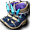 忘卻的炫光長靴 | 0.02% |
 忘卻的炫光護腕 忘卻的炫光護腕 | 0.02% |
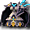 忘卻的炫光鎧甲（女） | 0.04% |
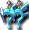 忘卻的炫光魔力耳環 | 0.02% |
| 忘卻的微光力量耳環 | 0.05% |
| 忘卻的微光泰蘭護腳 | 0.03% |
| 忘卻的微光閃避護脛 | 0.02% |
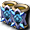 忘卻的微光伊爾德護脛 | 0.02% |
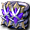 忘卻的微光布利特護脛 | 0.03% |
| 忘卻的炫光閃避護脛 | 0.01% |
| 忘卻的炫光伊爾德護脛 | 0.01% |
| 忘卻的炫光布利特護脛 | 0.01% |
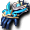 忘卻的微光手套 | 0.03% |
| 忘卻的微光鐵手套 | 0.03% |
| 忘卻的炫光鐵手套 | 0.01% |
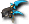 忘卻的炫光頭盔（男） | 0.02% |
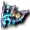 忘卻的炫光護肩 | 0.02% |
| 忘卻的微光布利特戒指 | 0.06% |
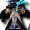 忘卻的炫光長袍（男） | 0.04% |
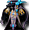 忘卻的炫光長袍（女） | 0.02% |
| 忘卻的炫光屏障盾 | 0.02% |
| 忘卻的炫光魔法盾 | 0.01% |
| 忘卻的炫光劍 | 0.02% |
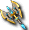 忘卻的炫光斧 | 0.02% |
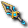 忘卻的炫光匕首 | 0.02% |
 忘卻的炫光寶珠 忘卻的炫光寶珠 | 0.02% |
 忘卻的炫光劍卡 忘卻的炫光劍卡 | 0.02% |
| 忘卻的炫光魔法卡組 | 0.02% |
| 忘卻的炫光彎刀 | 0.02% |
基本機率再乘上伺服器的掉寶倍率；「隨機一件」是從一組道具裡抽一件。